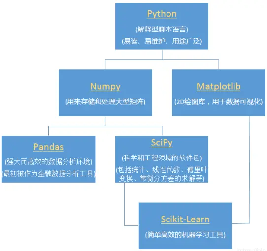

机器学习
AI 导读一分钟导读，先掌握全文主干。
核心观点
- PyTorch 2.x 起原生支持 Apple Silicon（MPS 后端），macOS 上可直接用 GPU 训练与推理
- TensorFlow 也官方支持 Apple Silicon，需安装 tensorflow-metal 插件
- 覆盖常见框架与 Python 机器学习包全景
关键结论与取舍
- macOS 开发机首选 PyTorch（MPS 一步到位）；TensorFlow 需额外插件
- 文末更新节对齐 2024-2026 框架演进
常见框架
-
PyTorch：2.x 起原生支持 Apple Silicon（MPS 后端），macOS 上可以直接拿 GPU 训练和推理
-
TensorFlow：官方支持 Apple Silicon，得装
tensorflow-metal插件（旧版 Apple tensorflow-plugin 已经停更） -
Core ML：苹果系统自带的机器学习框架，能调用 ANE 神经网络引擎
python机器学习包介绍
graph LR
D[数据集] --> SP[数据预处理
清洗/归一化] SP --> FE[特征工程
提取/选择] FE --> SP2[训练集/测试集
划分] SP2 --> TR[模型训练
fit()] TR --> EV[模型评估
accuracy/F1] EV -->|达标| DE[部署推理] EV -->|未达标| FE style TR fill:#9c27b0,stroke:#fff,color:#fff
清洗/归一化] SP --> FE[特征工程
提取/选择] FE --> SP2[训练集/测试集
划分] SP2 --> TR[模型训练
fit()] TR --> EV[模型评估
accuracy/F1] EV -->|达标| DE[部署推理] EV -->|未达标| FE style TR fill:#9c27b0,stroke:#fff,color:#fff

机器学习更新（2024-2026）
机器学习这块已经被大语言模型（LLM）深度改写。详见 LLM 页面 和 RAG 页面 。
- PyTorch 2.x：
torch.compile编译模式 + MPS 原生支持，训练和推理全面提速； - Hugging Face：模型仓库生态一直在往前走，transformers、datasets 和 smolagents 这类轻量 Agent 库已经成了 AI 开发的默认起点；
- 本地推理：Ollama、vLLM、llama.cpp 让 7B–70B 的开源模型在本机或单卡上就能跑起来；
- LLM 微调走向普及：PEFT / LoRA 加上各家云厂商的 MaaS 平台，让小团队也能低成本微调大模型（详见 AI 页）
- MLOps 成了常态：W&B、MLflow 这些平台把实验管理、评估和上线变成了标准流程。